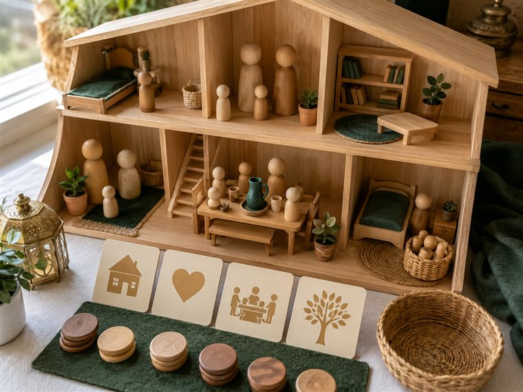
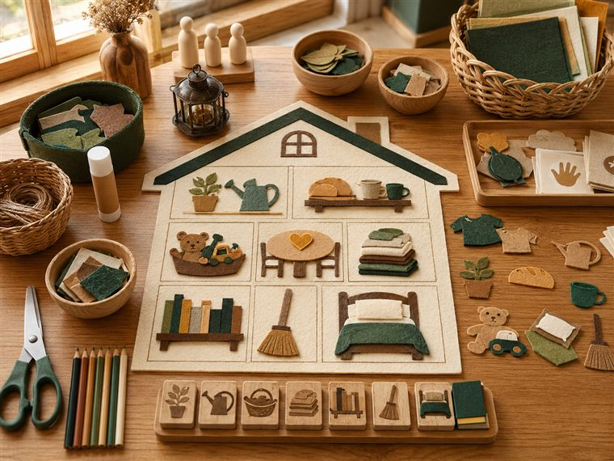
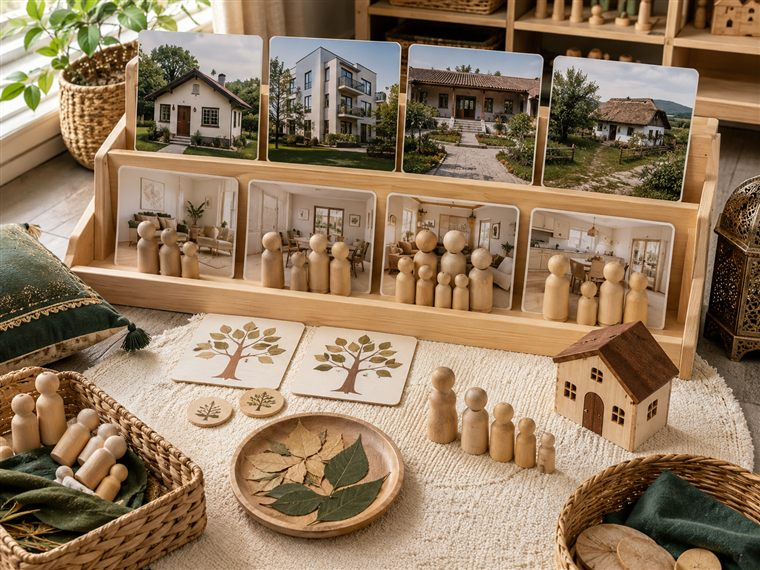
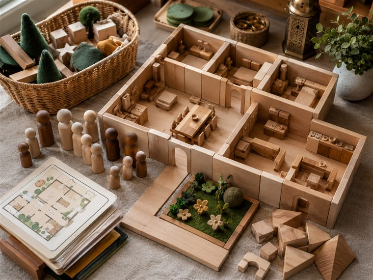

اليوم الأول · العائلةُ نعمةٌ من الله
مساحاتُ لعبٍ حرّ. لكثرة الأعداد نفتح ٤ أركانٍ متوازية بمراكز مختلفة؛ وزّعي المجموعات عليها وتتناوب بينها في الفترتين حتى لا تتكدّس. كل ركنٍ لمسةٌ تكاملية مع اللعب تجمع دروس اليوم: مفهوم العائلة (علّمني) · الاستئذان (أدب) · خصال الإيمان (قال رسولي) · اللهُ يراني والملائكةُ تكتبُ عملي (كتابي · الإنفطار) — تذكيرًا لا تجسيدًا لهيبة الغيب. (دُمى بلا ملامح. أعمار ٥–٦: بناء/تلوين جاهز/قصّ ولصق/ترتيب/اختيار بطاقات/أدوار/حركة — بلا كتابةٍ أو رسمٍ حرّ.)

🏠 المسكن · «أتعرّفُ على أفراد عائلتي وأستأذن»
يتعرّف الطفل على أفراد العائلة عبر دُمى البيوت الخشبية الصغيرة (بلا ملامح)، ويتقاسم الأدوارَ مع أصحابه (أمّ · أخت · أخ · جدّ...)، ثم يمثّل الاستئذانَ عند الدخول: يطرقُ، يُسلّم، يستأذن، يدخل؛ ويردّد «العائلةُ نعمةٌ من الله».
🧰 الأدوات: دُمى بيوتٍ خشبيةٌ صغيرة بلا ملامح · أثاثٌ خشبيٌّ · بابٌ لعبيّ للاستئذان · بطاقاتُ أدوار العائلة الجاهزة (أمّ · أخت · أخ · جدّ) تُقصّ مسبقًا.
📋 دور المعلمة: تُتيح اللعبَ الحرَّ وتوزيعَ الأدوار، ثم تنضمّ بلمسةٍ خفيفة: «مَن أفرادُ عائلتك؟ مَن أنعم عليك بهم؟ كيف تدخلُ عليهم؟»؛ تُنمذِج الطرقَ والسلامَ والاستئذان بلا تحويل اللعب إلى اختبار.
🌱 المعنى المركزي: أعرفُ أفرادَ عائلتي وأنّهم نعمةٌ من الله؛ أُحبُّهم وأستأذنُ عليهم بأدب.
📜 قوانين الركن: أبقى في ركني حتى ينتهي الوقت · أحافظ على أدواته · أتشارك وأنتظر دوري · أُعيد الأدوات مرتّبة.

🎨 فنوني · «ألوّن عائلتي وألصقُ نِعمتها»
يلوّن الطفل لوحةَ عائلةٍ جاهزة (أشكالٌ بلا وجوه)، ثم يقصّ بطاقاتِ أفراد العائلة ويلصقها حول بيته، ويردّد «عائلتي نعمةٌ أشكرُ اللهَ عليها».
🧰 الأدوات: ورقةُ العائلة الجاهزة للتلوين · أقلام تلوين · بطاقاتُ الأفراد المصوّرة (بلا ملامح) · مقصٌّ آمن ولاصق.
📋 دور المعلمة: تسمّي أفراد العائلة وتربطها بنعمة الله؛ تعين على القصّ واللصق؛ تُثني على المشاركة والفرح لا على الإتقان الفنّي.
🌱 المعنى المركزي: عائلتي نعمةٌ من الله أفرحُ بها وأحمدُه عليها.
📜 قوانين الركن: أبقى في ركني حتى ينتهي الوقت · أحافظ على أدواته · أتشارك وأنتظر دوري · أُعيد الأدوات مرتّبة.

📚 المكتبة · «كلُّ البيوت مختلفة والعائلاتُ الكبيرة»
يتصفّح الطفل كتبًا وبطاقاتِ صورٍ (أشخاصٌ بلا ملامح) لقصّتَي «كلُّ البيوت مختلفة» و«العائلاتُ الكبيرة»، ويرتّب صورَ القصة ويحكيها؛ فيدرك أنّ لكلِّ عائلةٍ بيتًا وأفرادًا، وكلُّها نعمةٌ من الله.
🧰 الأدوات: كتبٌ مصوّرة (بلا وجوه) · بطاقاتُ صورِ القصّتَين للترتيب والحكاية · وسائدُ ركن القراءة.
📋 دور المعلمة: تقرأ القصةَ بالصورة وتسأل «بمَ تختلفُ البيوت؟ مَن في العائلة الكبيرة؟»؛ تعين على ترتيب الأحداث؛ تربط تنوّعَ العائلات بنعمة الله وسعةِ رحمته.
🌱 المعنى المركزي: لكلِّ عائلةٍ بيتٌ وأفرادٌ يختلفون؛ عائلتي نعمةٌ أفرحُ بها وأشكرُ اللهَ عليها.
📜 قوانين الركن: أبقى في ركني حتى ينتهي الوقت · أحافظ على أدواته · أتشارك وأنتظر دوري · أُعيد الأدوات مرتّبة.

🧱 البناء · «أبني بيتَ عائلتي وأتعاون» (لا تلوين)
يبني الأطفال معًا بيتَ العائلة بالمكعبات ويتبادلون الأدوار الحركية بتعاون، ويضعون بطاقاتِ الأفراد الجاهزة في غرفه؛ وتذكّرهم المعلمةُ أنّ اللهَ يرى تعاونهم.
🧰 الأدوات: مكعباتٌ خشبية متنوّعة · قاعدة/سجادة البناء · بطاقاتُ أفراد العائلة الجاهزة · مجسّمات أثاثٍ بلا ملامح (بلا أقلام تلوين).
📋 دور المعلمة: توزّع الأدوار (بنّاء · ناقل · منظّم) بالتناوب لعبًا؛ تذكّر شفهيًّا بأنّ الله يرى تعاونهم والملائكةَ تكتبه (تذكيرًا لا تجسيدًا).
🌱 المعنى المركزي: بيتُ عائلتي أبنيه بالتعاون؛ واللهُ مطّلعٌ علينا فأُحسِن.
📜 قوانين الركن: أبقى في ركني حتى ينتهي الوقت · أحافظ على أدواته · أتشارك وأنتظر دوري · أُعيد الأدوات مرتّبة.